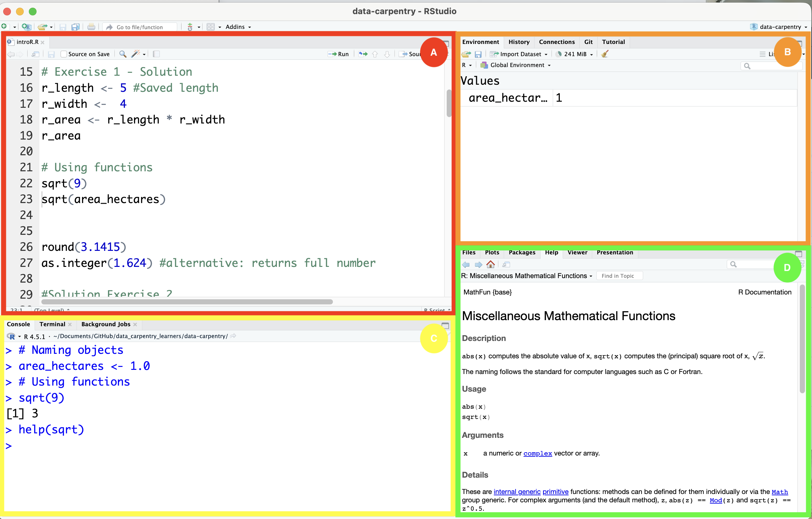
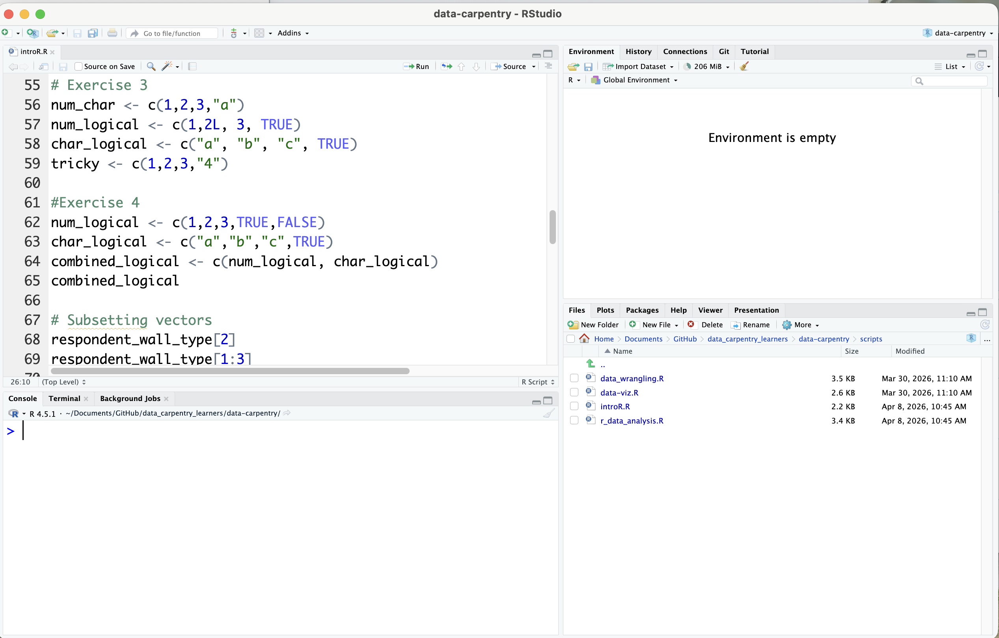
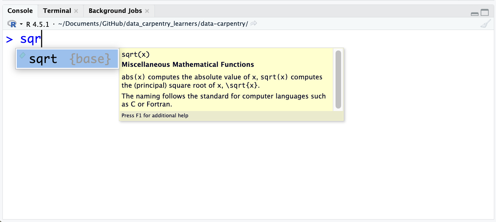
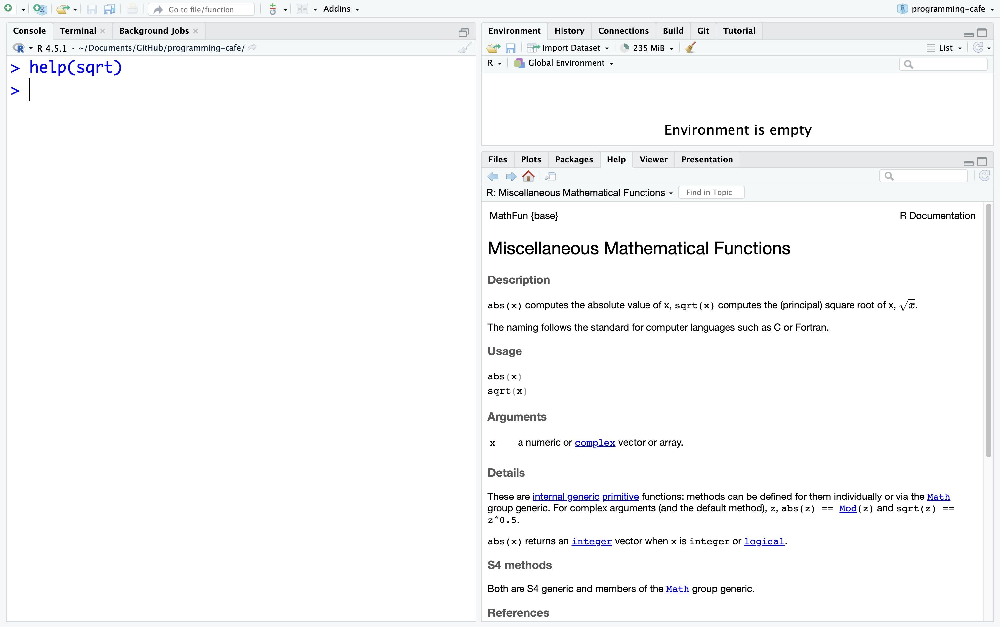
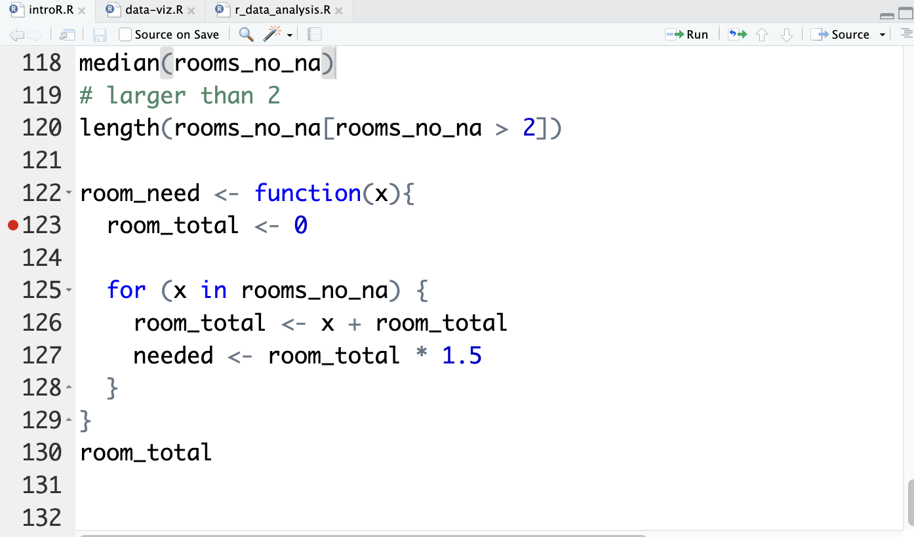
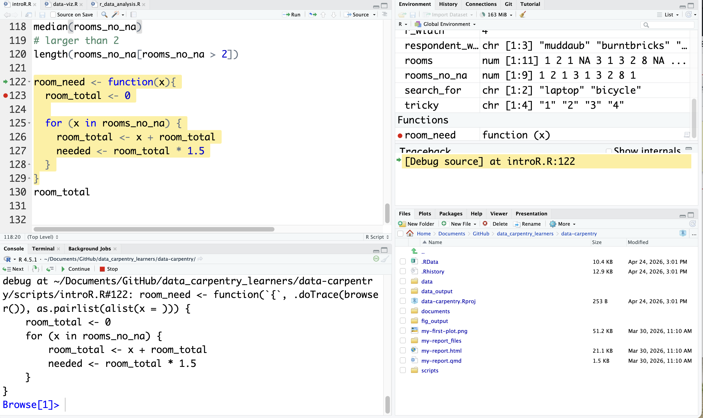
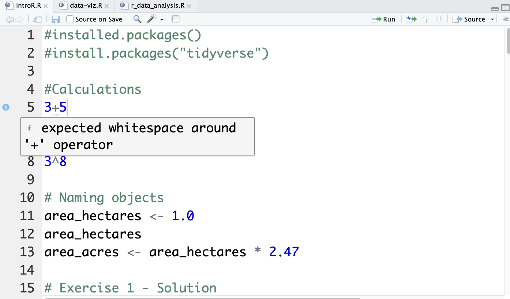
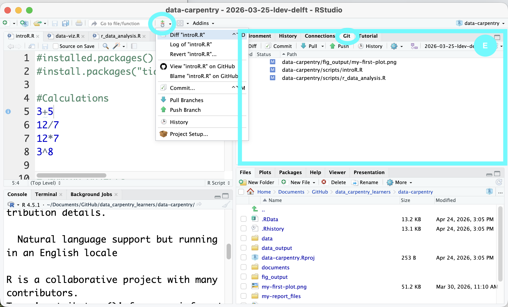

Get to know RStudio
Do you want to be more efficient when using RStudio? The following overview is based on the RStudio User Guide. It has been shortened to mostly show relevant content.
A quick tour through your IDE

The interface of RStudio shows you four so-called “panes”:
- The Source pane (A) allows you to edit your R scripts.
- The Environment pane (B) shows your environment, i.e., the objects that you created.
- The Console pane (C) can be used to write short R commands that do not need to be listed in the script (e.g., help() or view() to access more information).
- The Output pane (D) shows your plots, tables or html files.
As you can already see in the screenshot, the four panes have multiple functions. In the Output pane, for example, you can also manage your packages, look at the documentation or see your folder structure.
How do I run simple code?
To run simple code, you can just use the Console pane. However, to actually perform analyses, we recommend that you create a new Project. To do that, click on File > New Project and choose your working directory.
After that, you can click on the green plus in the upper left corner to create an empty.R script.

In this document, you can write all your code! Do not forget to save it in your working directory!

Get to know the basic features
Smart indentation & syntax highlighting
While writing your own code, R highlights important expressions in blue and comments in green. It also helps you manage your indentation, such as when writing a function. The following screenshot provides an example:

Autocompletion
RStudio can help you with writing your code by offering automatic completion using the Tab key. It automatically completes object names, function names and even possible arguments.
Here you can see an example of function completion:

Documentation
Within R, you can have a quick look into the documentation by using the help()function or using ?. The documentation will then be opened in the Output pane.
In the following screenshot you can see the documentation of the sqrt()function:

Debugging
If you encounter a bug and want to understand its cause, you might consider using debugging. To do this, you need to tell R when to inspect the status of your program. You can achieve this by setting breakpoints with a left click next to your code (on the index/line number to the left).

Once your program reaches the breakpoint, it will stop and give you the insights that you wanted.

If you are interested in how to debug, please have a look at the RStudio documentation. We hope to offer a Programming Café session on it in the future!
Code Diagnostics
RStudio can analyze your code to identify potential errors and stylistic issues! You can enable this feature in the settings Settings > Code > Diagnostics.
Turning the diagnostics on, you will see the potential problems. The screenshot below shows an example of a stylistic issue. R Studio offers a good overview of all potential messages here.

Version control
It is possible to connect R Studio with Git and Subversion. To do that, you can go to Settings > GIT/SVN and then enable the version control. Once you enabled it, you will find the Git tab (E) in the Environment pane which shows you the current changes. It also allows you to commit, push and pull using the Git dropdown.

If you want to know more about version control, consider following one of our Git courses or have a look at the RStudio documentation.
Personalize your experience
While the first thought that comes to mind when thinking about personalizing an IDE is adapting the color scheme, RStudio also offers various other customizing options.
Amongst others, you can
Further reading
RStudio offers an overview of tutorials that can you follow online which includes RLadiesSydney’s opinionated tour on RStudio
Want to learn more about R? The O’Reilly handbook on “Hands-On Programming with R” is freely available here, the handbook on “R for Data Science” can be accessed here
The Data Carpentries offer a course on “R for Social Scientists” which we actually regularly offer in-person at EUR (in collaboration with TUDelft, Leiden and VU).